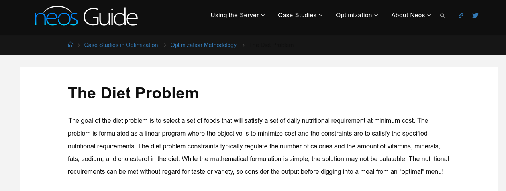
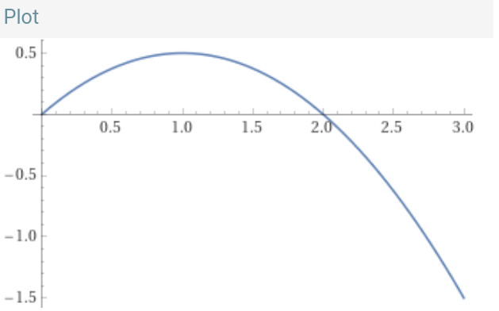

Linear Programming and You
How to eat better, live better, and optimize large scale industrial systems.
Diet
An adult human male needs
- 2200-2400 Calories
- 56 g Protein
- 225-325 g Carbs
- 44-78 g Fat
- ...
in a day.
We get these nutrients from food
| Food | Calories (Cal) | Protein (g) | Carbohydrates (g) | Fat (g) |
|---|---|---|---|---|
| Apple | 52 | 0.3 | 14 | 0.2 |
| Banana | 105 | 1.3 | 27 | 0.3 |
| Chicken Breast (cooked) | 165 | 31 | 0 | 3.6 |
| Salmon (cooked) | 206 | 22 | 0 | 13 |
| Pasta (cooked) | 200 | 7 | 42 | 1.3 |
| Spinach (cooked) | 41 | 5.3 | 3.6 | 0.5 |
Table provided by ChatGPT. Accuracy not guaranteed.
Diet problem: How do we decide how what to eat every day, while keeping to a budget?
History: In the 1940's, Soviet mathematician Leonid Kantorovich was trying to solve similar kinds problems, but for a whole country.

For this he (and many others) invented linear programming, a mathematical framework for describing resource allocation problems.
Linear Programming
At a high level, there are variables , constraints and an objective.
Variables represent how much of each resource is used. Constraints require a certain allocation of resources to satisfy it, or limits how much of each resouce we can produce. The objective tells us which allocation we prefer over others.
The Diet Linear Program
For each food item \(i\) (rice, broccoli, cheese,...) we introduce a variable \(x_i\) that represents how many grams of that food item we consume in a day.

\(x_1\)
\(x_2\)
\(x_3\)
The Diet Linear Program
Each food item provides a certain amount of each nutrient \(j\) (calories, calories,...), \(n_{ij}\). This information can be stored in a table (like on an earlier slide).
For example, if we take the first nutrient to be calories,
\(n_{11} = 10\)
\(n_{21} = 20\)
\(n_{31} = 7\)
The constraints say we need to eat a certain amount of each nutrient.
The Diet Linear Program
We write our constraints like this:
Each constraint says that if we add up all of the nutrients we get from each food item, they meet our nutritional requirements.
The Diet Linear Program
Our objective might be to minimize the cost of all of the food we eat in a day. If the price of item \(i\) is \(p_i\), then we write our objective as
\[\begin{aligned} \text{Minimize} \quad \sum_{i=1}^m p_{i} x_i \end{aligned} \]The Diet Linear Program
Putting it all together, our linear program is
\[\begin{aligned} \text{Minimize} \quad \sum_{i=1}^m p_{i} x_i\\ \text{s.t.} \quad \sum_{i=1}^m n_{i1} x_i & \ge 2000\\ \quad \sum_{i=1}^m n_{i2} x_i & \ge 56\\ \dots \end{aligned} \]The Diet Linear Program
People have studied this linear program intently. At first, they would solve these problems by hand, and nowadays, linear program solving is a cornerstone of computer science.
Linear Programming
There are a wide variety of algorithms for solving linear programs (the simplex method, interior point methods, the ellipsoid method).
The first practical theoretically efficient algorithm for this problem was developed by Arkadi Nemirovski, currently at Georgia Tech.
Modern linear program solvers can solve problems with billions of variables and constraints.
What makes a linear program linear?
There is a key assumption that each resource gives an amount of utility proportional to the amount of that resource you have.
If this assumption is violated, then it's not a linear program anymore.
Let's imagine that instead of wanting to minimize cost, we introduce a budget constraint that says we can't spend more than $50 on groceries a day.
\[\begin{aligned} \sum_{i=1}^m n_{i1} x_i & \ge 2000\\ \sum_{i=1}^m n_{i2} x_i & \ge 56\\ \dots\\ \sum_{i=1}^m p_{i} x_i & \le 50 \end{aligned} \]We might try to add an objective that maximizes how much we enjoy the food we eat each day.
The linear programming approach would be to introduce `values' for each food item, and weight the objective by their value.
Nonlinear Utility
There is an issue! Doubling the amount of candy I eat does not make me twice as happy.
There is a phenomenon in people's preferences called diminishing marginal returns, the more of something I have, the less having a little more of it is of value to me.
A utility function that satisfies a formal notion of diminishing marginal returns is called concave.
What makes a linear program linear?
There is an issue! Doubling the amount of candy I eat does not make me twice as happy.
Maybe my utility function for candy looks like \[f_{candy}(x) = x - \frac{1}{2}x^2.\]
My new problem might look like
\[\begin{aligned} \text{Maximize} \quad \sum_{i=1}^m f_i(x_i)\\ \sum_{i=1}^m n_{i1} x_i & \ge 2000\\ \sum_{i=1}^m n_{i2} x_i & \ge 56\\ \dots\\ \sum_{i=1}^m p_{i} x_i & \le 50, \end{aligned} \]where \(f_i\) is my utility from food \(i\).
Convex Optimization
Can we still solve these nonlinear optimization problems?
We might not even know what our actual utility function is, how can we possibly solve this problem?
Modern convex optimization shows that it is possible to solve these problems efficiently as long as you can know your marginal utility from eating each item.
Beyond the Diet Problem
Linear programming (and more general convex programming) is useful for all sorts of different kinds of things, from allocating space for chips, designing networks, and more.
There are also a lot of extensions beyond convex optimization involving discrete variables, longer term planning, etc. with mathematical guarantees, though these are much harder.